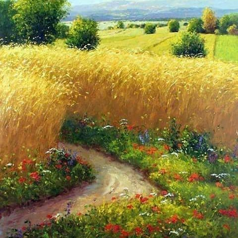

Deň ZEME
Byť hrdý na svoj národ znamená ctiť si odkaz svojích predkov, svojou prácou ich zveladiť a zachovať pre budúce generácie❤
Pred takmer 20timi rokmi bolo na slovensku o desiatky tisíc hektárov žltých polí menej než dnes. Kým v roku 2000 sa pestovala repka olejná na 93 700hektároch ornej pôdy, teraz je to viac ako na 180 000hektároch.
Pestovanie repky sa stalo pre poľnohospodárov výhodným biznisom - repka nie je náročná na pestovanie a zároveň je stopercentne využiteĺná.
Atraktivita tejto plodiny výrazne stúpla po vstupe Slovenska di Európskej únie, pretože farmári mohli bez ohľadu na to, čo pestovali požiadať o dotácie z eurofondov.
Nebolo by lepšie opäť pestovať to čo potrebujeme???
Takto kedysi vyzerali naše polia, boli zlaté zrno a nie žlté repkové❤
Skúsme opäť zasiať žito, konope, zasadiť zemiaky, hneď bude lepšie
#denzeme #žito #zemiaky#konope#krasneslovensko#zivotvraji